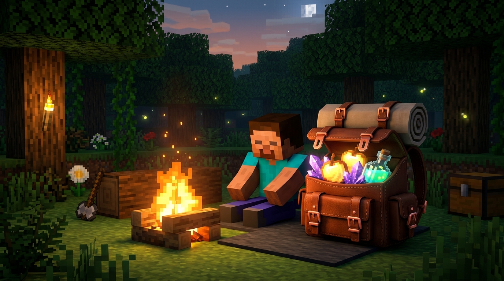
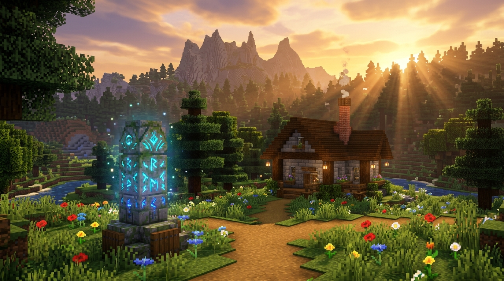
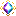
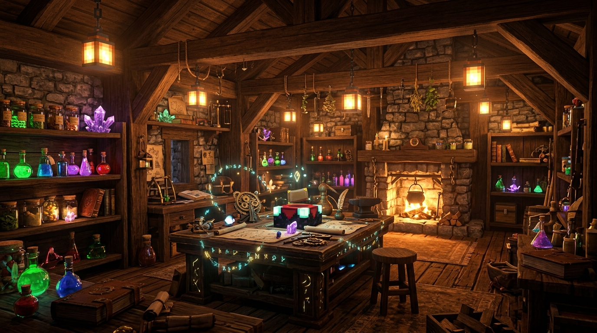
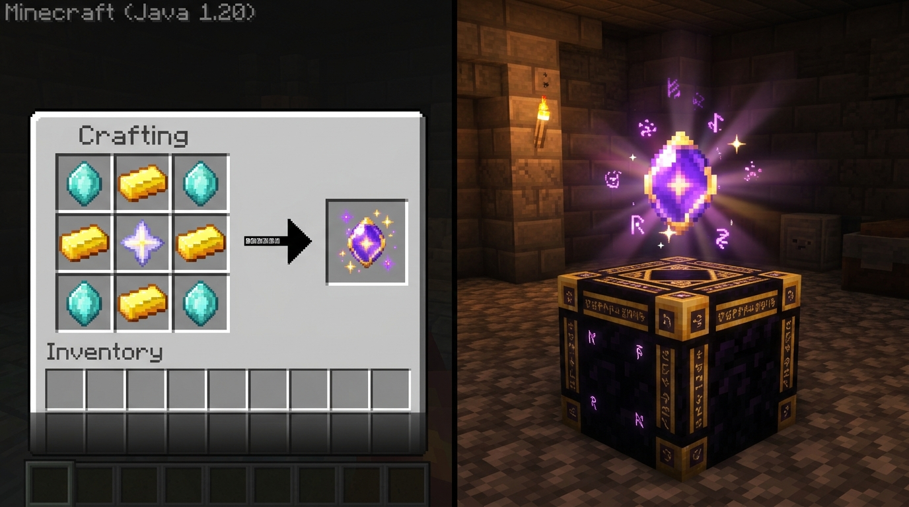
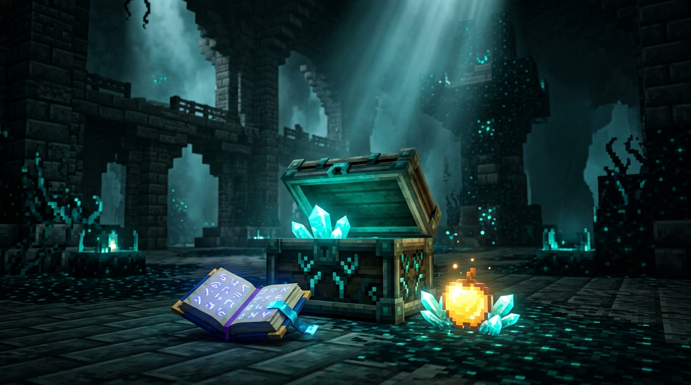

Partir à l'aventure sans prise de tête
Tout ce qu'il te faut pour explorer le monde : un sac magique qui mange pour toi et ne se perd jamais, un réseau de téléportation entre tes bases, et des enchantements jusqu'au niveau 10 !
Conseil de départ : Appuie sur la touche B en jeu à tout moment pour ouvrir ton sac à dos instantanément, sans même le retirer de ton dos !
🧭 Choisis ce que tu veux découvrir :
Les Sacs à Dos Intelligents
Du cuir à la Netherite (jusqu'à 120 cases de stockage !). Personnalise les couleurs, ajoute des modules pour manger tout seul, cuire tes viandes ou garder tes affaires si tu meurs.
Le Réseau de Waystones
Des stèles magiques à poser dans tes villages et maisons préférés pour t'y téléporter en 1 seconde avec ta pierre de rappel. Fini de te perdre en explorant !
La Transcendance & Rang X
Dépasse les limites de Minecraft ! Débloque les enchantements ultimes (Efficacité X, Fortune X, Solidité X) avec des particules roses féeriques.
L'Atelier de Recyclage
Ne jette plus rien : la Table de Décrafting te rend tes diamants d'armures usagées, et le Concasseur de Géodes extrait les précieuses Gemmes d'Éther.
Le Grimoire des 89 Sorts
Une sélection des meilleurs pouvoirs du jeu : aimant pour aspirer les drops, minage en zone, vol de vie et bouclier de survie pour ne jamais mourir.
Le Carnet d'Expédition 1.21
Où trouver la Masse, le Noyau Lourd, les Élytres et le modèle Silence le plus rare du jeu ? Tous les pourcentages d'apparition pour vos explorations.
Les Sacs à Dos Évolutifs
Finie la frustration de l'inventaire plein ! Découvre les 6 tailles de sacs et les super-pouvoirs magiques qui changent ta façon de jouer.
Comment ça marche ? Tu peux porter ton sac dans ton dos (il est visible sur ton skin !), l'ouvrir n'importe quand avec la touche B, ou le poser par terre comme un vrai coffre voyageur en faisant Maj + Clic Droit.
📦 Les 6 Tailles de Sacs
| Sac | Capacité | Améliorations (Slots) | Spécificité |
|---|---|---|---|
| 🪵 Cuir (Départ) | 27 cases (3 rangées) | 1 module | Le sac idéal pour commencer ton aventure en douceur. |
| 🥉 Cuivre | 45 cases (5 rangées) | 1 module | Très facile à crafter avec le cuivre des grottes. |
| ⚙️ Fer | 54 cases (Grand Coffre !) | 2 modules | Double ton inventaire standard. Indispensable pour miner. |
| 👑 Or | 81 cases (9 rangées) | 3 modules | Débloque le défilement fluide pour ranger des montagnes d'objets. |
| 💎 Diamant | 108 cases (12 rangées) | 5 modules | Personnalisable ! Tu peux le teindre avec tes couleurs préférées. |
| 🌌 Netherite (Ultime) | 120 cases (14 rangées) | 7 modules | 🔥 Indestructible dans la lave + Résistant au feu ! |
⭐ Les Meilleurs Modules à Glisser dans son Sac
Glisse simplement ces cartes d'amélioration dans les petits slots sur le côté de ton sac pour lui donner des capacités automatiques magiques :
Fini de t'arrêter pour grignoter ! Range ta nourriture dans le sac : il te nourrit automatiquement dès que ta jauge de faim commence à baisser.
Zéro stress de la mort : Si tu tombes dans un ravin ou dans la lave, ton sac et tout son contenu restent sur ton dos lors de ta réapparition !
Tous les blocs et objets que tu casses ou trouves au sol vont directement se ranger dans ton sac, sans encombrer ta barre rapide.
Un vrai four dans ton sac ! Cuit automatiquement tes minerais bruts et tes viandes de chasse pendant que tu continues de te promener.
Permet d'empiler jusqu'à 1 024 objets dans une seule case (au lieu de 64). Idéal pour stocker des tonnes de terre ou de minerais sans saturer.
Ouvre une grille de craft 3×3 complète directement dans l'interface de ton sac. Plus besoin de poser un établi par terre tous les 5 mètres.
En rentrant à ta base, fais un clic sur tes coffres : tous les objets qui correspondent se rangent automatiquement dans tes coffres en une fraction de seconde !
Détruit automatiquement les blocs inutiles que tu choisis (ex: gravier, diorite, cobblestone) dès qu'ils entrent dans ton sac pour ne pas polluer l'espace.
🎨 Personnalise les Couleurs de ton Sac !
Sur les sacs en Diamant et en Netherite, tu peux choisir tes colorants et métaux préférés dans un établi :
- Colorant à gauche du sac : Change la couleur de la toile principale (rose, bleu céleste, violet...).
- Colorant à droite du sac : Change la couleur des bordures.
- Colorant en dessous : Change la petite pochette ventrale.
- Ajouter une gemme ou un lingot : Change le métal des boucles et fermetures (Améthyste pour des boucles violettes, Or pour du doré, Émeraude pour du vert menthe !).
- Nettoyage : Un simple clic droit avec ton sac sur un chaudron rempli d'eau retire toutes les couleurs si tu veux changer de style.

Le Réseau de Téléportation
Retrouve ta maison, ton campement au bord de l'eau ou le village de tes amis en un seul clic, sans tricherie et avec poésie.
Comment voyager simplement ? Dès que tu trouves une Waystone ou que tu en poses une chez toi : fais un clic droit dessus pour l'activer et lui donner un nom doux (ex: « Cabane des Bois » ou « Mines de Diamant »).
Fais un clic droit maintenu avec la Pierre de Téléportation : un menu s'ouvre, choisis ta destination et téléporte-toi instantanément.
Rechargeable et infinie (petit temps d'attente entre deux sauts pour équilibrer l'aventure).
Si tu te trouves devant une Waystone, tu peux cliquer directement dessus pour te téléporter vers n'importe quelle autre Waystone activée sans consommer de pierre nomade.
Il existe 10 styles de pierres pour s'accorder avec ton architecture : pierre moussue pour les jardins, ardoise des abîmes pour les forteresses, grès doré pour les oasis et briques de boue pour les villages ruraux.

Le Système de Transcendance
Dans Minecraft Vanilla, les enchantements s'arrêtent au niveau V. Ici, brise le plafond de verre et monte tes sorts jusqu'au Rang X avec de superbes étoiles roses !
⚡ Simulateur de Coût de Transcendance
Choisis ton niveau actuel et le niveau de tes rêves pour savoir exactement combien de cristaux et d'XP préparer :
Ce dont tu as besoin :

Cristal de Transcendance (IX ➔ X) 1Impossible de perdre un enchantement transcendé par erreur ! La meule de base (Grindstone) refuse de désenchanter les objets de rang X. Tes créations précieuses sont à l'abri.

Décrafting, Recyclage & Concasseur
Récupère tes diamants d'anciens équipements, recycle sans perte et concasse les géodes d'améthyste pour extraire l'Éther de fin de jeu.
Tu as crafté une armure en diamant en trop ou trouvé des pièces d'armure dans un donjon ? Pose-les dans la Table de Décrafting : elle te redonne immédiatement les vrais diamants et lingots qui la composaient !
Alimenté avec une pointe en diamant et un peu de poudre de blaze, le Concasseur brise les géodes brutes de l'End pour extraire les précieuses Gemmes d'Éther servant à la Transcendance.
Tu veux transférer les enchantements d'un objet vers des livres sans détruire ton outil ? Pose-le ici avec un livre vierge : les enchantements sont récupérés intacts sur le livre !

Les 89 Sortilèges du Jeu
Une collection unifiée de sorts équilibrés pour tes armes, outils et armures. Cherche n'importe quel effet en temps réel !

Les Trésors & Tables de Butin 1.21
Le guide officiel pour savoir exactement où chercher et quoi trouver dans les donjons, chambres d'épreuve et cités antiques.